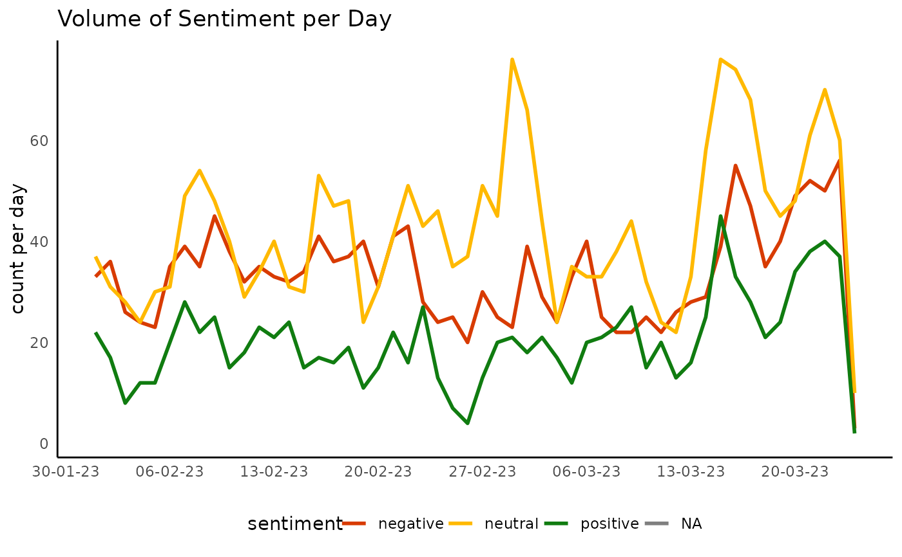

Plot a bar or line chart of sentiment over time
Arguments
- data
A data frame that includes the grouping and sentiment variables.
- sentiment_var
The sentiment variable. Default is "sentiment".
- date_var
The variable to date by. Default is "date".
- sentiment_colours
Colour mapping for the sentiment categories
- plot_type
The type of plot. Default is "percent".
- time_unit
A single unit of time fed into lubridate::floor_date "week", "day", "month","quarter", "year"
Examples
{
DisplayR::disp_example %>% dr_plot_sent_vot(plot_type = "bar",
time_unit = "day")
DisplayR::disp_example %>% dr_plot_sent_vot(plot_type = "line",
time_unit = "day")
}
#> Warning: Removed 1 row containing missing values or values outside the scale range
#> (`geom_line()`).
